How much of the region’s industrial waste could replace raw materials that its firms buy? Reference year 2022.
Interactive report: explore every figure by kommun, industry, product and scenario at https://makijota.github.io/skaraborg-symbiosis/skaraborg/ (English and Swedish).
This report quantifies the potential for regional industrial symbiosis in Skaraborg’s 15 kommuner. Symbiosis here means waste from one firm replacing a raw or semi-finished material that another firm would otherwise import. The analysis follows one reproducible method on three nested scales:
It also places Skaraborg within Västra Götaland County, analysed with the same method.
All figures are model estimates built from official statistics. They are not measured flows. The results are aggregated so that no figure describes a single firm.
Industry in Skaraborg generates about 0.81 Mt of waste a year (95 % interval 0.59–1.03 Mt):
Production firms import about 0.46 Mt of raw and semi-finished goods a year, worth 2.5 billion SEK. Two-thirds of these imports are minerals (CN 25) and stone products (CN 68), and the cement and mineral-wool industry alone accounts for 62 % of the tonnes. These imports are the demand that local waste can replace.
How much can be replaced depends above all on what we know about which waste can substitute which product. Each line below is the whole region pooled (LP optimum):
| Matching knowledge | Waste reused | Imports replaced | Value |
|---|---|---|---|
| Documented industrial exchanges only (MAESTRI) | 20 kt | 4.3 % of tonnes | 58 MSEK |
| Adding the reviewed waste-to-resource knowledge graph (W2RKG) | 203 kt | 44 % of tonnes | 460 MSEK a year (18 % of the import bill) |
The first line is the conservative baseline; the second is the best-supported broad estimate. Tonnes come from allocations that maximise mass and values from allocations that maximise value (§5).
The binding constraint is matching knowledge, not demand. With documented exchanges only, 661 of the 810 kt of waste has no known compatible product. With the knowledge graph, the main limit becomes demand: much of the waste could be used, but the region does not import enough of the products it could replace.
Kommuner cannot do it alone. Within kommun borders only 31 % (MAESTRI) to 63 % (with W2RKG) of the regional potential is realised. Exchange between kommuner closes almost all of the gap: the two-stage kommun allocation reaches 98–100 % of the regional optimum.
Three hubs receive most exchanged material:
Lidköping, Falköping and Skara are the largest net suppliers.
At firm level, 12–16 kt (MAESTRI) or 103–121 kt (with W2RKG) can be matched firm to firm. The average straight-line distance is 20–26 km.
Against the region’s total material use (8.6 Mt, including domestic extraction and freight from the rest of Sweden), reused waste could replace 0.4 % (MAESTRI) to 3.8 % (with W2RKG) of use.
Inside Västra Götaland, Skaraborg is a net receiver of by-products: see §9.
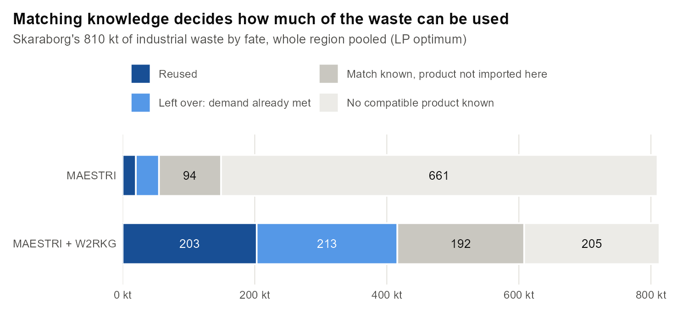
Skaraborg comprises 15 kommuner:
| Code | Kommun | Code | Kommun | Code | Kommun |
|---|---|---|---|---|---|
| 1444 | Grästorp | 1471 | Götene | 1495 | Skara |
| 1445 | Essunga | 1472 | Tibro | 1496 | Skövde |
| 1446 | Karlsborg | 1473 | Töreboda | 1497 | Hjo |
| 1447 | Gullspång | 1493 | Mariestad | 1498 | Tidaholm |
| 1470 | Vara | 1494 | Lidköping | 1499 | Falköping |
The region has 133,700 jobs: 2.4 % of Sweden’s jobs but 4.7 % of its manufacturing jobs. Industry is the backbone: engines and vehicles in Skövde, food in Götene and Skara, and cement, stone and concrete across the plains.
| Data | Source | Use |
|---|---|---|
| Employment by workplace, kommun and NACE (2022) | SCB, workplace register (FDB) | where waste is generated and inputs are used |
| Import microdata by organisation and CN8 (2022) | SCB, foreign trade statistics | input demand and regional prices |
| Waste generated by sector, Sweden 2004–2022 | Eurostat env_wasgen |
waste per worker |
| Waste composition by List of Waste code | firm-level waste profiles | split of each sector’s waste into waste types |
| Domestic extraction by product | Eurostat EW-MFA | regional material balance |
| Lorry freight (2021–2023) | Trafikanalys, lorry survey | flows to and from the rest of Sweden |
| Waste → product substitutions | MAESTRI (Evans et al. 2017; method from Patricio et al. 2022); W2RKG knowledge graph (Zhao et al. 2025, Nature Communications) | which waste can replace which product |
| Firm locations and size classes | firm registry (706 firms in sectors A–E) | firm-level allocation |
The method has five steps, and all of them can be rerun from the code.
A regional material balance places the results in a wider frame. It combines domestic extraction, imports and lorry freight in and out, giving apparent regional material use.
| Item | Mt | MSEK |
|---|---|---|
| Domestic extraction | 7.18 | 17,284 |
| Imports from abroad | 1.48 | 50,197 |
| Inflow from the rest of Sweden (lorry) | 3.74 | 68,994 |
| Outflow to the rest of Sweden and abroad (lorry) | 3.83 | 86,152 |
| Apparent regional use | 8.57 | 50,322 |
| Circulation within Skaraborg (lorry) | 7.39 | — |
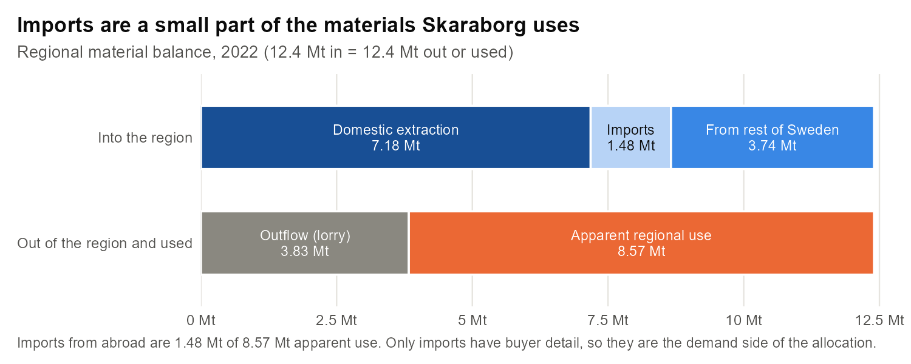
Skaraborg extracts about 7.2 Mt a year: 4.2 Mt of stone, gravel and sand from its quarries, and crops, grass and wood from farms and forests. Minerals (about 54 %) and biomass (about 32 %) dominate regional use, almost all extracted locally. What leaves the region is processed (food, cement and mineral products, vehicles). What arrives is raw (stone, fuels, chemicals, metals).
| Sector | kt | 95 % interval |
|---|---|---|
| Construction (F) | 280 | 203–357 |
| Manufacturing (C) | 280 | 207–352 |
| Water and waste services (E) | 150 | 113–187 |
| Agriculture and forestry (A) | 53 | 24–81 |
| Energy (D) | 37 | 32–41 |
| Quarrying (B) | 10 | — |
| Total | 810 | 591–1,029 |
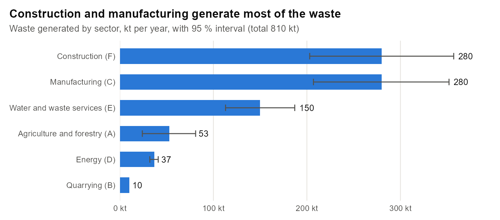
By waste chapter:
| Waste chapter | Share |
|---|---|
| Construction and demolition wastes (LoW 17) | 26 % |
| Waste-treatment residues (LoW 19) | 19 % |
| Municipal-type wastes (LoW 20) | 14 % |
| Metal shaping residues (LoW 12) | 11 % |
| Food and agricultural residues (LoW 02) | 8 % |
| Packaging (LoW 15) | 6 % |
| Wood processing (LoW 03) | 5 % |
Production firms import about 461 kt of raw and semi-finished goods (2,533 MSEK).
| Buying industry (NACE2) | kt | Share |
|---|---|---|
| 23 Non-metallic minerals (cement, mineral wool, concrete) | 286 | 62 % |
| 10 Food | 33 | 7 % |
| 08 Quarrying | 27 | 6 % |
| 16 Wood | 22 | 5 % |
| 17 Paper | 18 | 4 % |
| 35 Energy | 17 | 4 % |
| 20 Chemicals | 16 | 4 % |
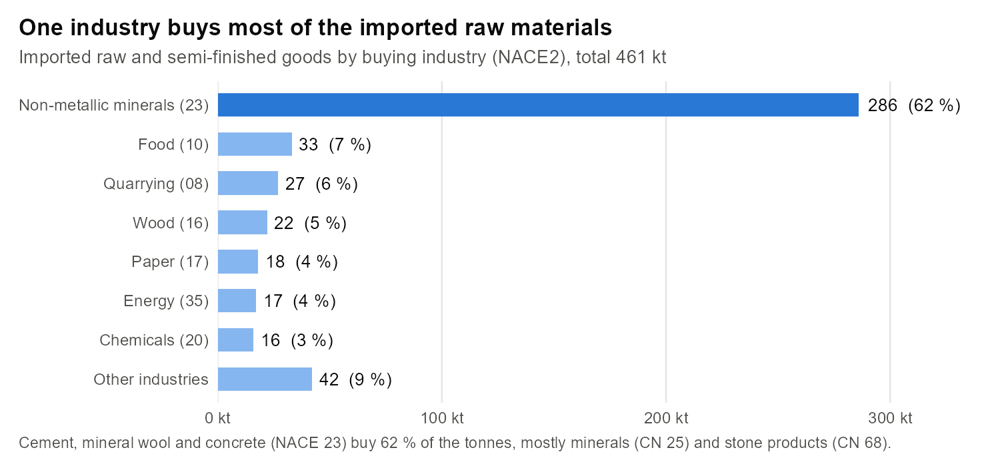
By product, minerals (CN 25, 44 %), stone products (CN 68, 12 %), fuels (CN 27, 12 %) and wood (CN 44, 9 %) lead.
Table 1. Waste reused and imports replaced, by scale (mass regime; value from the value regime)
| Scale | MAESTRI: kt | MAESTRI: % of imports (t) | MAESTRI: MSEK | MAESTRI + W2RKG: kt | MAESTRI + W2RKG: % of imports (t) | MAESTRI + W2RKG: MSEK |
|---|---|---|---|---|---|---|
| Region, LP optimum | 19.8 | 4.3 | 58 | 202.7 | 43.9 | 463 |
| Kommun, within kommun only | 6.1 | 1.3 | 39 | 128.5 | 27.9 | 284 |
| Kommun, within + between | 19.5 | 4.2 | 58 | 202.1 | 43.8 | 462 |
| Firms, bottom-up | 12.7 | 3.3 | 41 | 103.0 | 26.7 | 388 |
| Firms, top-down | 15.7 | 3.4 | 48 | 121.0 | 26.4 | 440 |
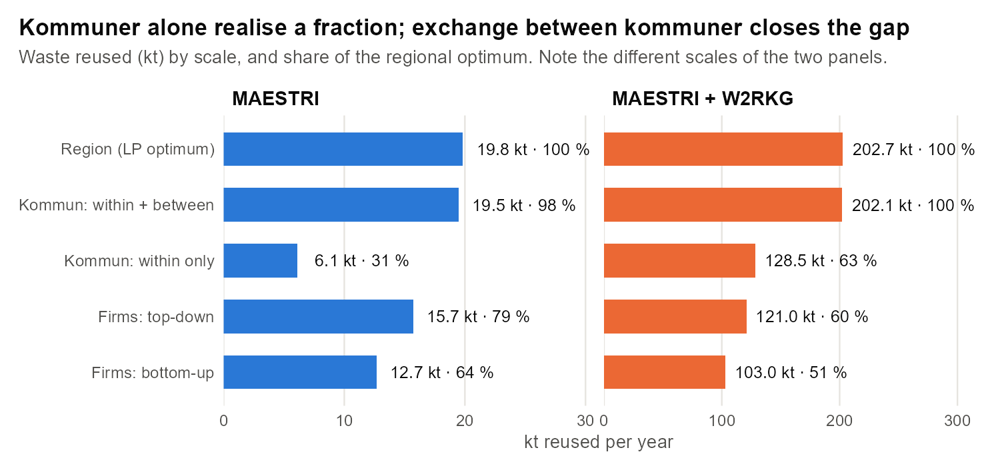
Share of the region’s waste reused at the regional optimum: 2.4 % (MAESTRI) and 25.0 % (MAESTRI + W2RKG).
Readings:
Figure 6 maps the firm-level exchanges. To protect individual firms, the lines join places, not firms. Firms are pooled into 5 km squares that hold at least three firms, and firms in emptier squares are placed at the centre of their kommun. No firm positions or names are shown.
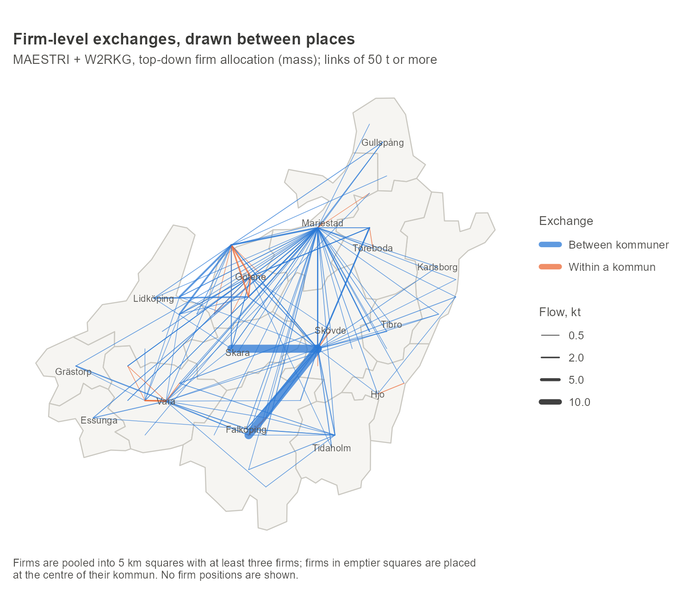
Table 2. Products replaced, kommun two-stage allocation
| Product (CN4) | MAESTRI kt | MAESTRI MSEK | MAESTRI + W2RKG kt | MAESTRI + W2RKG MSEK |
|---|---|---|---|---|
| 2517 Crushed stone, gravel | 9.1 | 2.7 | 91.2 | 27.3 |
| 2701 Coal (kiln fuel) | — | — | 33.9 | 91.7 |
| 2505 Natural sand | — | — | 16.8 | 2.3 |
| 4401 Fuel wood, chips | 3.2 | 0.6 | 16.2 | 3.3 |
| 4707 Recovered paper | — | — | 9.1 | 26.5 |
| 4705 Wood pulp | 2.9 | 14.6 | 8.8 | 45.1 |
| 2309 Animal feed preparations | 1.7 | 34.9 | 1.7 | 34.9 |
| 1108 Starches | — | — | 2.4 | 32.4 |
| 2106 Food preparations | — | — | 2.1 | 97.9 |
| 3502 Albumins | — | — | 2.0 | 18.2 |
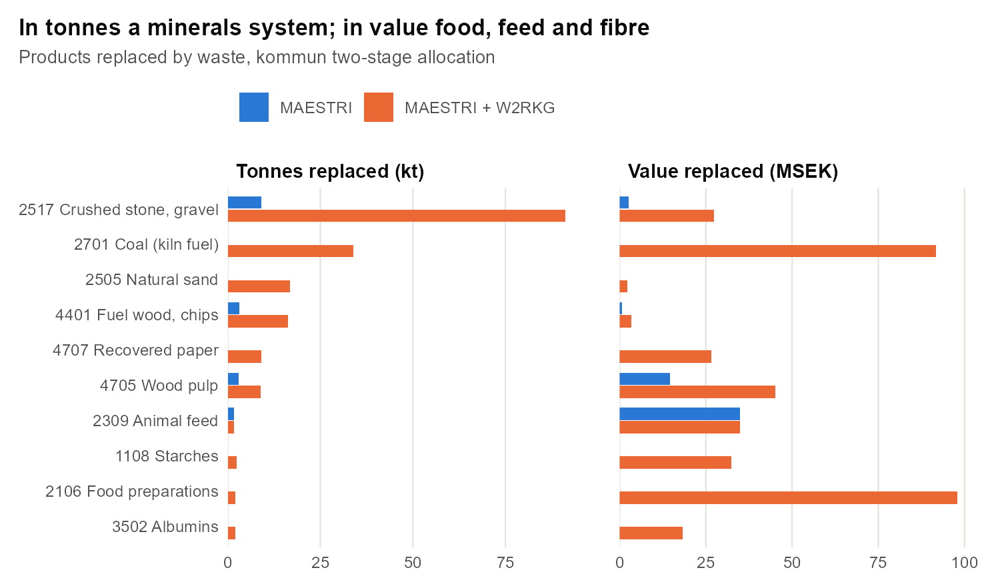
Table 3. Waste streams used (MAESTRI + W2RKG, kommun two-stage)
| Waste (LoW) | Used, kt | Available, kt |
|---|---|---|
| 17 01 07 concrete, bricks, tiles (mixed) | 48.1 | 67.6 |
| 19 12 12 mixed residues from mechanical waste treatment | 25.5 | 75.7 |
| 17 09 04 mixed construction and demolition waste | 16.6 | 33.1 |
| 17 05 04 soil and stones | 13.7 | 35.1 |
| 03 01 05 sawdust, shavings | 13.6 | 13.6 |
| 17 03 02 bituminous mixtures (asphalt) | 10.3 | 23.8 |
| 12 01 01 ferrous turnings | 9.6 | 69.3 |
| 19 08 05 sewage sludge | 7.9 | 38.9 |
| 20 01 01 paper and cardboard | 7.6 | 20.6 |
In tonnes the region is a minerals system: construction and demolition waste replacing crushed stone, sand and gravel, and residues replacing kiln fuel at the cement plant. In value, food, feed, fibre and pulp matter most. With documented exchanges only, food residues to animal feed (35 MSEK) and wood to pulp (15 MSEK) carry most of the value.
Why waste stays unused (regional allocation; see also Figure 1):
| Status | MAESTRI kt | MAESTRI + W2RKG kt |
|---|---|---|
| No compatible product known | 661 | 205 |
| Compatible product exists but is not imported in the region | 94 | 192 |
| Partly used (demand met) | 35 left | 213 left |
| Fully used | 16 | 95 |
Waste whose compatible products are not imported in Skaraborg could be marketed outside the region, or to firms that buy these products from Swedish suppliers. Those purchases are not visible in import data (see §8).
Table 4. Kommun results, MAESTRI + W2RKG, two-stage allocation (mass)
| Kommun | Waste, kt | Waste reused, % | Net supplier (+) / receiver (−), kt |
|---|---|---|---|
| Skövde | 149.0 | 56.9 | −3.9 |
| Lidköping | 115.2 | 24.0 | +27.1 |
| Mariestad | 95.3 | 17.5 | −13.0 |
| Falköping | 91.3 | 14.3 | +10.5 |
| Götene | 77.4 | 23.5 | −36.6 |
| Vara | 62.9 | 27.7 | +0.2 |
| Skara | 53.0 | 7.7 | +3.8 |
| Töreboda | 27.8 | 16.7 | +1.2 |
| Tidaholm | 26.5 | 13.9 | +1.0 |
| Tibro | 23.3 | 17.3 | +2.6 |
| Gullspång | 22.3 | 4.6 | +1.0 |
| Hjo | 20.2 | 9.0 | +0.9 |
| Grästorp | 15.6 | 12.4 | +1.9 |
| Karlsborg | 15.4 | 7.4 | +1.1 |
| Essunga | 14.7 | 13.8 | +2.0 |
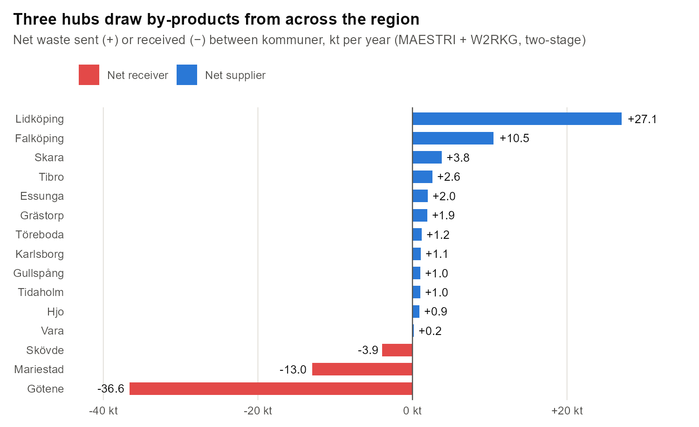
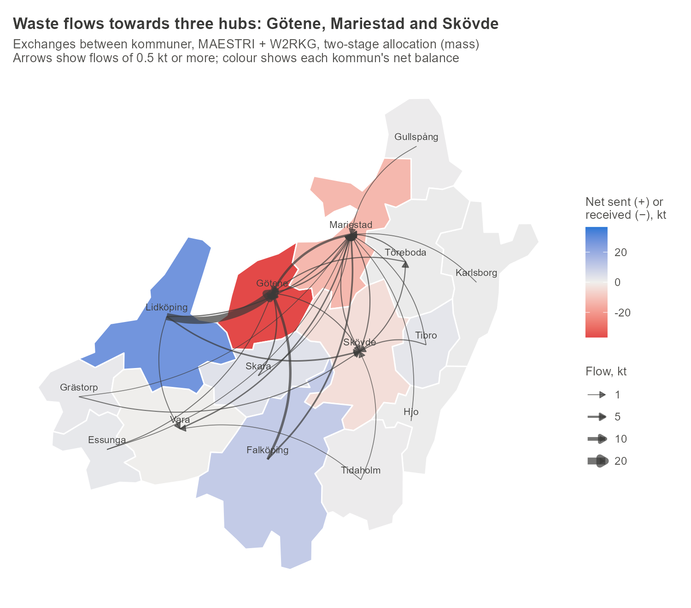
With documented exchanges only, the same pattern holds at a much smaller scale (19.5 kt). Mariestad, Götene and Skövde are the receivers; Lidköping and Falköping supply.
Imports are only 1.5 of the 8.6 Mt the region uses. The rest is domestic extraction and freight from the rest of Sweden. Allocating waste against apparent use instead of imports gives:
| Matching | Waste reused | Share of regional use (t) | Share of regional use (value) | Value |
|---|---|---|---|---|
| MAESTRI | 31 kt | 0.4 % | 0.3 % | 50 MSEK |
| MAESTRI + W2RKG | 305 kt | 3.8 % | 3.8 % | 630 MSEK |
| MAESTRI + W2RKG, without quarry waste | 296 kt | 3.7 % | 3.7 % | 625 MSEK |
Measured against total use, by-products could cover a few percent of Skaraborg’s material needs. The volume is dominated by recycled aggregates replacing locally quarried stone.
Skaraborg is one of the four kommunalförbund of Västra Götaland County. The others are Göteborgsregionen, Fyrbodal and Sjuhärad, and together the four cover the county’s 49 kommuner, each counted once. Running the same method on the whole county shows what Skaraborg gains or loses by exchanging by-products with the rest of the county. Run on its own, Skaraborg reproduces exactly the results in this report.
Table 5. Skaraborg alone and as part of the county (kommun two-stage, mass)
| MAESTRI: alone | MAESTRI: in county | MAESTRI + W2RKG: alone | MAESTRI + W2RKG: in county | |
|---|---|---|---|---|
| Skaraborg waste used within Skaraborg, kt | 19.5 | 14.8 | 202.1 | 130.6 |
| Skaraborg waste sent to the rest of the county, kt | — | 3.2 | — | 7.0 |
| Waste from the rest of the county used in Skaraborg, kt | — | 30.8 | — | 78.3 |
| Share of Skaraborg’s waste reused | 2.4 % | 2.2 % | 24.9 % | 17.0 % |
| Share of Skaraborg’s imported inputs replaced (t) | 4.2 % | 9.9 % | 43.8 % | 45.3 % |
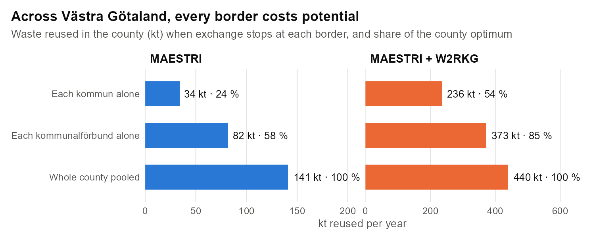
Distances and transport costs are not yet part of the allocation. Exchanges across the county are longer (35–70 km on average at firm level, against 20–26 km within Skaraborg), so some of the county-wide gain may not pay for its transport, especially for low-value bulk minerals.
Table 6. Sensitivity, kommun two-stage allocation (mass regime)
Here MSEK is the value of the tonnes allocated in the mass regime. It is therefore lower than the value-regime figures in Table 1 (for example 435 against 462 MSEK for MAESTRI + W2RKG), which come from an allocation that maximises value.
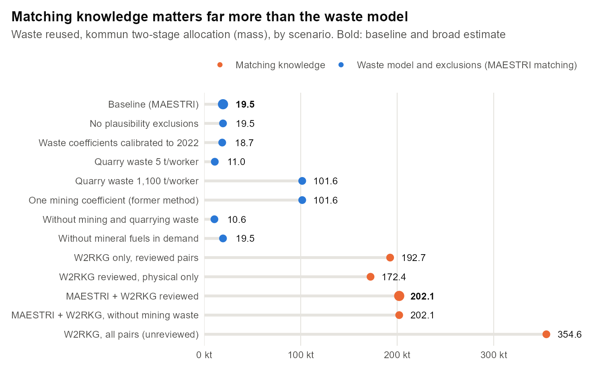
| Scenario | Waste, kt | Reused, kt | % of imports (t) | MSEK |
|---|---|---|---|---|
| Baseline (MAESTRI) | 810 | 19.5 | 4.2 | 58 |
| No plausibility exclusions | 810 | 19.5 | 4.2 | 69 |
| Waste coefficients calibrated to 2022 | 731 | 18.7 | 4.0 | 55 |
| Quarry waste 5 t/worker | 800 | 11.0 | 2.4 | 56 |
| Quarry waste 1,100 t/worker | 915 | 101.6 | 22.0 | 83 |
| One mining coefficient for all of B (former method) | 2,007 | 101.6 | 22.0 | 83 |
| Without mining and quarrying waste | 799 | 10.6 | 2.3 | 56 |
| W2RKG only, reviewed pairs | 810 | 192.7 | 41.8 | 382 |
| W2RKG reviewed, physical substitutions only | 810 | 172.4 | 37.4 | 186 |
| W2RKG, all pairs (unreviewed) | 810 | 354.6 | 76.9 | 1,528 |
| MAESTRI + W2RKG reviewed | 810 | 202.1 | 43.8 | 435 |
| MAESTRI + W2RKG, without mining waste | 799 | 202.1 | 43.8 | 435 |
| Without mineral fuels in demand | 810 | 19.5 | 4.8 | 58 |
The uncertainties, in order of size:
The analysis is a scripted R pipeline. The same code runs for Skaraborg, each of the other kommunalförbund and the whole county, by changing one setting (the study area). Microdata from SCB are confidential and are not shared. The interactive web report that accompanies this document shows aggregated results only:
Suggested citation. Cohen, J. (2026). Regional industrial symbiosis in Skaraborg: waste as a substitute for imported inputs, 2022. Working report.
References
env_wasgen; economy-wide material flow
accounts.